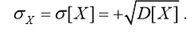
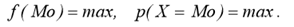
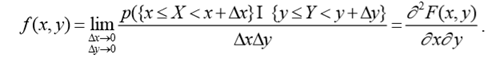
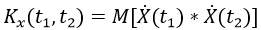
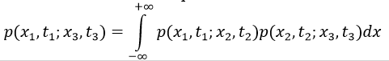
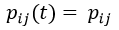

1.Общая теория
, случайные величины могут быть дискретными и непрерывными.
Случайная величина (СВ) Х называется дискретной, если множество
– счетное, т.е. его элементы можно расположить в определенном порядке и пронумеровать.
Случайная величина Х называется непрерывной (недискретной), если множество
– несчетное.
Законом распределения СВ Х называется любая функция (правило, таблица и т.п.), устанавливающая соответствие между значениями случайной величины и вероятностями их наступления и позволяющая находить вероятности всевозможных событий p{a ≤ X < b}, ∀a, b, связанных со случайной величиной.
Функцией распределения F(x) СВ X называется вероятность того, что она примет значение меньшее, чем аргумент функции x: F(x) = p{X < x}.
Функция распределения любой ДСВ есть разрывная ступенчатая функция, скачки которой происходят в точках, соответствующих возможным значениям случайной величины, и равны вероятностям этих значений:
Случайная величина Х называется непрерывной, если ее функция распределения F(x) – непрерывная и дифференцируемая функция для всех значений аргумента.
Плотностью распределения (плотностью вероятности) f(x) НСВ X называется производная ее функции распределения:
Числовые характеристики случайной величины
Начальный момент k-го порядка СВ X есть математическое ожидание k-й степени этой случайной величины:
Дисперсия СВ характеризует степень рассеивания (разброса) значений случайной величины относительно ее математического ожидания и определяется по формулам:

Среднее квадратическое отклонение СВ X характеризует ширину диапазона значений X и равно:

Мода СВ равна ее наиболее вероятному значению, т.е. то значение, для которого вероятность Pi (для дискретной случайной величины) или f(x) (для непрерывных случайной величины) достигает максимума:

Медиана СВ X равна такому ее значению, для которого выполняется условие p{X < Me} = p{X ≥ Me}. Медиана, как правило, существует только для непрерывных случайных величин. Значение Me может быть определено как решение одного из следующих уравнений:
Двумерные СВ
Двухмерную случайную величину (Х, Y) геометрически можно представить как случайную точку (Х, У) на плоскости х0у либо как случайный вектор, направленный из начала координат в точку (Х, У):
Двухмерный закон распределения вероятностей – функция, таблица, правило, позволяющие вычислить вероятности любых случайных событий, связанных двухмерной случайной величиной (Х, Y):
Двухмерная функция распределения двухмерной случайной величины (Х, Y) равна вероятности совместного выполнения двух событий {Х < х} и {Y < у}:
Двухмерная плотность распределения f(х, у) характеризует плотность вероятности в окрестности точки с координатами (х, у) и равна второй смешанной производной функция распределения:

Смешанный начальный момент порядка k + s равен математическому ожиданию произведения X^k и Y^s:
Корреляционный момент характеризует степень тесноты линейной зависимости величин X и Y и рассеивание их значений относительно точки (m_x, m_y):

Если K < 0, то между величинами X и Y существует отрицательная корреляционная зависимость, т.е. чем больше значение одной величины, тем более вероятны меньшие значение у другой.
Если K > 0, то между величинами X и Y существует положительная корреляционная зависимость, т.е. чем больше значение одной величины, тем более вероятны большие значения у другой.
Если K = 0, то величины X и Y называются корреляционно независимыми или некоррелированными, т.е. между ними отсутствует зависимость линейного характера.
Если K ≠ 0, то величины X и Y называются коррелированными.
Из коррелированности двух СВ следует их зависимость, но из зависимости еще НЕ вытекает их коррелированность, так как зависимость может иметь и нелинейный характер.
Из независимости СВ обязательно следует их некоррелированность, но из некоррелированности НЕ всегда следует независимость этих величин.
Коэффициент корреляции характеризует степень линейной зависимости величин и равен:
Корреляционный момент нормируется для того, чтобы получить характеристику только степени тесноты линейной зависимости (ковариация зависит от дисперсии СВ, т.е. их рассеивания от значений точки (m_x,m_y)).
2. Корреляционная теория случайных процессов
Сечение СФ X(t) – случайная величина, соответствующая фиксированному значению аргумента случайной функции.
Реализация СФ X(t) – неслучайная функция аргумента t, которая может оказаться равной случайной функции в результате испытания.
Корреляционная функция СФ X(t) – неслучайная функция двух независимых аргументов t1 и t2, значение которой при каждой паре фиксированных значений аргументов равно корреляционному моменту сечений, соответствующих этим же фиксированным значениям аргументов:

При равных между собой значениях аргументов t1 = t2 = t корреляционной функции СФ равна дисперсии этой функции:
Корреляционная функция характеризует степень зависимости между сечениями СФ, относящимся к различным t. Свойства корреляционной функции:

Взаимная корреляционная функция (корреляционная функция связи) двух СФ X(t) и Y(t) – неслучайная функция двух независимых аргументов t1 и t2, значение которой при каждой паре фиксированных значений аргументов равно корреляционному моменту сечений обеих функций, соответствующих этим же фиксированным значениям аргументов:
Коррелированными называют две СФ, если их взаимная корреляционная функция не равна тождественно нулю.
Некоррелированными называют две СФ, взаимная корреляционная функция которых тождественно равна 0.
Свойства взаимной корреляционной функции:
3. Интегрирование случайных процессов
Где g(t,τ) – некоторая функция двух переменных (весовая функция).
X(τ) – случайная функция.
t - t0 = T – область интегрирования.
СФ X(τ) будем называть интегрируемой по области Т с весом g(t,τ), если существует СФ Y(t), называемая интегралом такая, что
Интеграл Y(t) – предел в среднем квадратическом от интегральной суммы:

4. Марковские случайные процессы
ξ(t_i) – сечения процесса. Множество E = {ξ(t_0 ),…,ξ(t_n )}, т.е. множество всех вохможных состояний системы, называется фазовым пространством.
Сечения процесса - состояния системы.
Одно из свойств, сильно упрощающее исследование случайного процесса — это «марковское свойство». Если объяснять очень неформальным языком, то марковское свойство сообщает нам, что если мы знаем значение, полученное каким-то случайным процессом в заданный момент времени, то не получим никакой дополнительной информации о будущем поведении процесса, собирая другие сведения о его прошлом. Более математическим языком: в любой момент времени условное распределение будущих состояний процесса с заданными текущим и прошлыми состояниями зависит только от текущего состояния, но не от прошлых состояний (свойство отсутствия памяти). Случайный процесс с марковским свойством называется марковским процессом.
Условная функция распределения
называется марковской переходной функцией.
Условная плотность распределения

называется переходной вероятностью (вероятность перехода системы из состояния x_n в состояние x_(n+1) на интервале времени [t_n, t_(n+1)]).
Случайный процесс ξ(t) является марковским, если его условная функция распределения не зависит от значений процесса в прошлые моменты времени t_1, …, t_(n-1), а определяется лишь значением в настоящий момент времени t_n, то есть выполняется равенство:

(Это неравенство интерпретируют как указание на то, что для марковского процесса будущее не зависит от прошлого при известном настоящем)
Вероятности переходов удовлетворяют двум основным соотношениям:
1. Условию нормировки (справедливо для всех стохастических систем):
(сумма вероятностей в одной строке матрицы равна единице)
2. Уравнению Чепмена - Колмогорова. Это уравнение является определяющим в методах исследования марковских процессов и имеет весьма широкий спектр представлений:

Все марковские процессы можно разделить на классы в зависимости от структуры множества X - значений случайного процесса ξ(t) и интервала времени наблюдения Т. Если множество X - дискретное, то есть конечное или счётное, то процесс ξ(t) называется цепью Маркова. При этом, если Т — дискретное, то процесс называется цепью Маркова с дискретным временем, а если Т - непрерывное (то есть система может менять свои состояния в произвольные моменты времени), то процесс называется цепью Маркова с непрерывным временем. Если оба множества X и Т непрерывные, то процесс называется непрерывным марковским процессом.
Цепи Маркова с дискретным временем
Условные вероятности вида:

называются вероятностями перехода, или переходными вероятностями.
Они образуют матрицу вероятностей переходов (Марковская матрица, стохастическая матрица). В большинстве случаев рассматривают однородные цепи Маркова, где вероятности переходов p_ij(t) не зависят от t:

Для однородных цепей матрица переходов имеет вид:
Условие нормировки для такой матрицы:
(сумма элементов одной строки всегда равна единице, так как система обязательно окажется в каком-то из своих состояний)
Граф вероятностей переходов (граф Маркова) – еще один способ изобразить марковскую цепь. Например, для матрицы
граф имеет вид:
Уравнение Чепмена-Колмогорова (вероятность перехода из состояния i в состояние j за m шагов) для дискретной цепи записывается как
Рекуррентная формула (для того, чтобы попасть в состояние j, нужно сначала за m-1 шагов попасть в состояние k, а затем перейти в j).
Классификация состояний цепей Маркова с дискретным временем
Все остальные состояния называются существенными.
• Состояния i и j называются сообщающимися (i ↔ j), если существуют n и m такие, что
• Все существенные состояния можно разделить на классы, которые состоят из сообщающихся состояний и ни из одного состояния данного класса нельзя перейти в состояние другого класса. Такие классы состояний называются неразложимыми (замкнутыми).
• Определим вероятность первого возвращения в состояние i на n-м шаге:
Тогда вероятность

можно рассматривать как вероятность того, что система, выйдя из состояния i, хоть раз вернется в него.
Если f_i=1, то состояние называется возвратным, если f_i < 1 – невозвратным.
Теорема солидарности. Если имеются два сообщающихся состояния и одно из них – возвратное, то и второе тоже возвратное.
Цепи Маркова с непрерывным временем
Случайный процесс ξ(t) называется непрерывным марковским, если для любых моментов времени s' < s < t ꞓ T и любых действительных у выполнено равенство
Р{ ξ(t) < y| ξ(s) = x, ξ(s') = z} = P{ ξ(t) < y| ξ(s) = x} = F(s,x;t,y).
Условная функция распределения F(s,x;t,y) называется марковской переходной функцией.
Задание этой функции и начального распределения вероятностей состояний полностью определяет марковский процесс. Если существует производная
которая называется плотностью вероятностей переходов, то для марковской переходной функции можно записать
5. Диффузионные процессы
1. Для любого ε > 0 и любых х равномерно по s < t выполняется предельное равенство
Это условие требует, чтобы вероятность того, что |ξ(t) - ξ(s)| > ε, была бы величиной бесконечно малой более высокого порядка малости, чем |t – s| при t → s.
2. Существуют функции a(s,x) и b(s,x) такие, что
Здесь функция a(s,x) называется коэффициентом переноса, а функция b(s,x) — коэффициентом диффузии.
3. Для любых k > 2
Для однородных диффузионных процессов коэффициенты переноса и диффузии не зависят от времени s, то есть имеют вид a(s, х) = a(x), b(s, х) = b(х).
6. Прямое и обратное уравнения Колмогорова
где
Формально дифференцируя уравнение Колмогорова — Чепмена по t при t = 0 получаем обратное уравнение Колмогорова dP(t)dt=QP(t). Необходимо подчеркнуть, что для бесконечномерных пространств оператор Q уже не обязательно непрерывен, и может быть определен не всюду, например, быть дифференциальным оператором в пространстве распределений.
7. Обобщенные случайные процессы
(финитные = конечные)
Случайный функционал Ф(φ) называется линейным, если для любых элементов φ и ψ из пространства К и любых чисел и α и β выполняется равенство:
Cлучайный функционал Ф(φ) называется непрерывным, если из того, что функции сходятся к в пространстве К (1 <= j <= n), вытекает равенство:
Подобно тому как непрерывный линейный функционал в пространстве К называют обобщенной функцией, непрерывный линейный случайный функционал в пространстве К мы будем называть обобщенной случайной функцией. В случае, когда пространство К состоит из функций одного переменного, соответствующую случайную функцию называют обобщенным случайным процессом.
Приведем примеры обобщенных случайных процессов. Сопоставим линейно независимым функциям φ_1(х), ... , φ_n(х) из пространства К случайную величину (Ф(φ1), .... Ф(φn)) с распределением вероятностей
где Λφ - матрица, обратная матрице ||b_jk||, состоящей из чисел
Обобщенный случайный процесс, задаваемый таким распределением вероятностей, называется единичным. Этот процесс можно истолковать как результат измерения некоторым прибором скорости частицы, совершающей одномерное броуновское движение и не имеющей инерции. Единичный случайный процесс не является обычным случайным процессом, поскольку скорость броуновской частицы в каждый данный момент времени не имеет распределения вероятностей.
Операции над обобщенными случайными процессами определяются аналогично тому, как это делается для обобщенных функций. Например, под линейной комбинацией αΦ1 + βΦ2 обобщенных случайных процессов Ф1 и Φ2, понимают обобщенный случайный процесс Ф, сопоставляющий каждой функции φ(t) из пространства К случайную величину αΦ1(φ) + βΦ2(φ). Таким образом, множество всех обобщенных случайных процессов образует линейное пространство.
Обычно операции над обобщенными случайными процессами определяются при помощи соответствующих операций над основными функциями φ(t). Так, под произведением бесконечно дифференцируемой функции f(t) на обобщенный случайный процесс Ф мы понимаем процесс, при котором функции φ(t) из пространства К соответствует случайная величина Ф(fφ). Точно так же под производной Ф' обобщенного случайного процесса Ф мы понимаем процесс, при котором функции φ(t) соответствует случайная величина — Ф(φ').
Заметим, что, в то время как производная обычного случайного процесса может уже не являться случайным процессом того же типа, производная обобщенного случайного процесса всегда существует и является обобщенным случайным процессом. В частности, хотя производная винеровского случайного процесса не является обычным случайным процессом, она является обобщенным случайным процессом.
8. Источники
• Назаров А.А. Теория вероятностей и случайных процессов: учебное пособие/Назаров А.А., Терпугов А.Ф. - 2-е изд., испр. - Томск : Изд-во НТЛ, 2010.-204 с.
• Вентцель Е.С. Теория вероятностей: Учеб. для вузов/Е.С. Вентцель. - 10-е изд., стер. - М.: Высш. шк., 2006. - 575 с.
• Kenneth B. An introduction to probability and random processes/Kenneth Backlawski, Gian-Carlo Rota - 1979. - 467 c.
Также предлагаем вашему вниманию курс лекций по случайным процессам ФИВТ МФТИ.